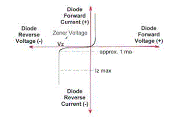

The zener diodes are able to operate in forward bias as well as in reverse bias breakdown region. There are two processes in the operation of zener diode: Avalanche multiplication and zener breakdown. In avalanche multiplication process the charge carriers which are the important part of reverse saturation current, picks up the energy from potential which is applied on the junction barrier of diode. And every carrier produces a new carrier by the process of collision and disrupting bonds. By the way, zener effect and avalanche breakdown is different process. Electron hole pairs are developed in the pn region, due to the thermal effect. The minority carriers, that is electrons leads to generate the leakage current. When the breakdown voltage is tends to reach the “tunnelling” action starts. The minority charge carriers tunnels across the highly doped pn junction. Production of new charge carriers is occurred at this process, that i why this process is termed as avalanche multiplication.

If the primary carrier do not pick up such amount of energy which is needed for disrupting covalent bonds, in that case a new electron hole pair which is produce because an electric field is exist in the junction barrier increase the reverse current. This behaviour of zener diode is called zener breakdown. The characteristics curve for the operation of zener diode is shown in the figure.
 by
by